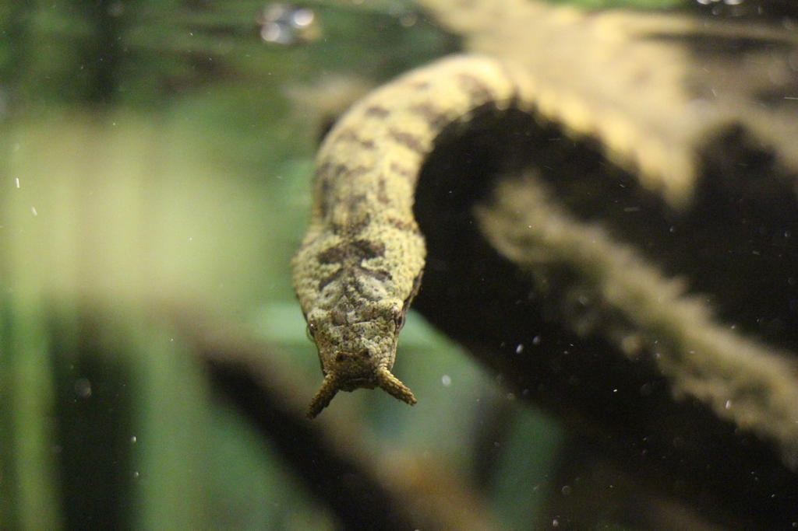
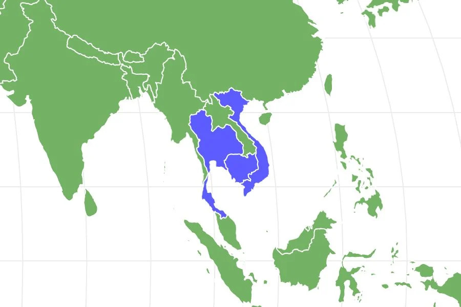

Scientific Name
Erpeton tentaculatum

Erpeton tentaculatum
Least Concern
Tentacles Water Snakes have a pair of appendages[1] next to their nostrils. Although it does not have a know function many people speculate that it is used to lure in prey. Their bodies are extremely flat and thier skin color is close to a twig. They average around 19.6 inches in length.

10-20 years
Mainly fish but occasionally eat frogs and crabs.
viviparous[1]
diurnal[1]
They mainly stay in water and rarley go on land.
Larger aquatic animals.